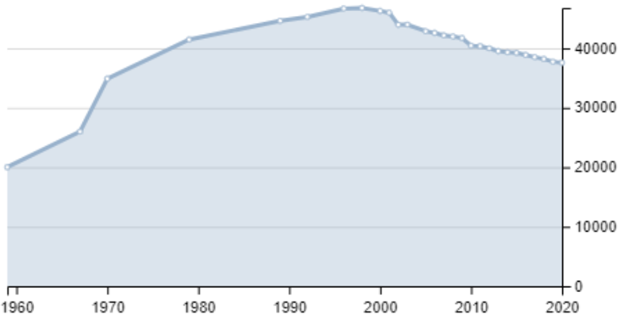

Содержание:
Заво́лжье — город (с 1964) в Нижегородской области России.
Входит в Городецкий район, в составе которого представляет собой административно - территориальное образование (город районного значения) и одноимённое муниципальное образование город Заволжье со статусом городского поселения как единственный его населённый пункт.
Заволжье ходит в Городецкий район, в составе которого представляет собой административно - территориальное образование (город районного значения) и одноимённое муниципальное образование город Заволжье со статусом городского поселения как единственный его населённый пункт.
► География
Город расположен на берегу Горьковского водохранилища на низком правом берегу Волги напротив города Городца, в 55 км к северо-западу от города Нижнего Новгорода. Центры Заволжья и Балахны разделяет 24 км, между их окраинами — 12 км.
► Название
Название несколько парадоксально, ибо Заволжьем традиционно именуется (по отношению к западному берегу) левый, а не правый берег Волги. В данном случае название города происходит от расположения за Волгой по отношению к древнему Городцу.
► Население
На 1 января 2021 года по численности населения город находился на 421-м месте из 1116 городов Российской Федерации.

► Экономика
Объём отгруженных товаров собственного производства, выполнено работ и услуг собственными силами по обрабатывающим производствам города за 2010 год: 10,06 млрд рублей.
Основные промышленные предприятия города:
- Заволжский моторный завод (ЗМЗ);
- Заволжский завод гусеничных тягачей (ЗЗГТ);
- мебельная фабрика ООО «Юта»;
- Заволжский деревообрабатывающий завод;
- завод нетканых материалов немецкой компании Freudenberg Politex;
- завод по производству стеклянной фармацевтической упаковки немецкой компании Schott (открыт в мае 2011 года);
- фабрика по производству экструдированного пенополистерола, утеплителя (Teplex) ООО «Ряд»;
- предприятие по производству автожгутов немецкой компании Leoni ООО «Леони РУС».
- предприятие по производству подшипников скольжения и подшипниковых материалов японской компании Daido Metal Co.,Ltd. ООО «Дайдо Металл Русь»
► Транспорт
- Железнодорожная станция Заволжье-пассажирская (59,3 км от Нижнего Новгорода) — конечная станция электрифицированной ветки. Узел автодорог Нижний Новгород — Иваново и Заволжье — Городец — Линда. Есть пирс.
- Автовокзал (ул. Привокзальная). Совмещенный — железнодорожный и автобусный. Работает с 06.00 до 20.00. Электропоезда на Нижний Новгород отправляются восемь раз в день. В пути около двух часов. Автобусы на Нижний Новгород: 38-46 транзитных рейсов с 05.30 до 18.30, по выходным : также пригородные автобусы 6 раз в день. В пути 1 ч. 40 мин. Также выполняются междугородные транзитные рейсы в Дзержинск, Ковернино, Сокольское, Хохлому, Чкаловск, Иваново, Пучеж, Юрьевец, Кинешму, пригородные в Городец, Чкаловск, Балахну и ряд населённых пунктов Городецкого и Чкаловского районов.
- Внутригородской транспорт. Имеется семь городских автобусных маршрутов, три следуют до ЗМЗ (Заволжский моторный завод) с разных концов города. Интервал на всех маршрутах 7-20 минут.
► Медицинские учреждения
- Городская больница № 1 (проспект Дзержинского).
- Городская поликлиника № 1.
- Городская детская поликлиника.
- Городская ветеринарная лечебница, (ул. Пирогова).
- Стоматологическая клиника «Лечение и консультация», (ул. Молодёжная).
- Городской центр стоматологии (ул. Пушкина).
- Медицинский центр «Медико» (ул. Пушкина).
- Медицинский центр «Авиценна» (ул. Пушкина).
- Медицинский центр «Альяна» (ул. Пушкина).
- Городская женская консультация (ул. Пирогова).
- Центр планирования семьи и брака.
 telegram
telegram instagram
instagram discord
discord